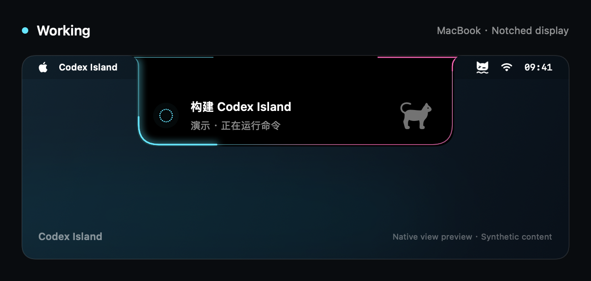
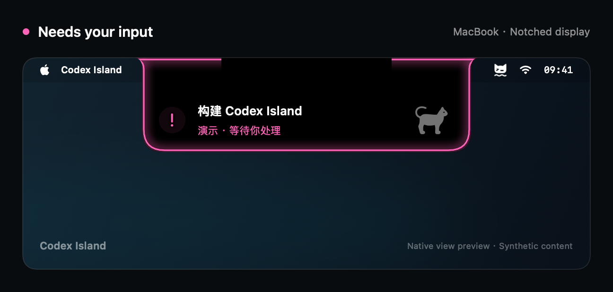
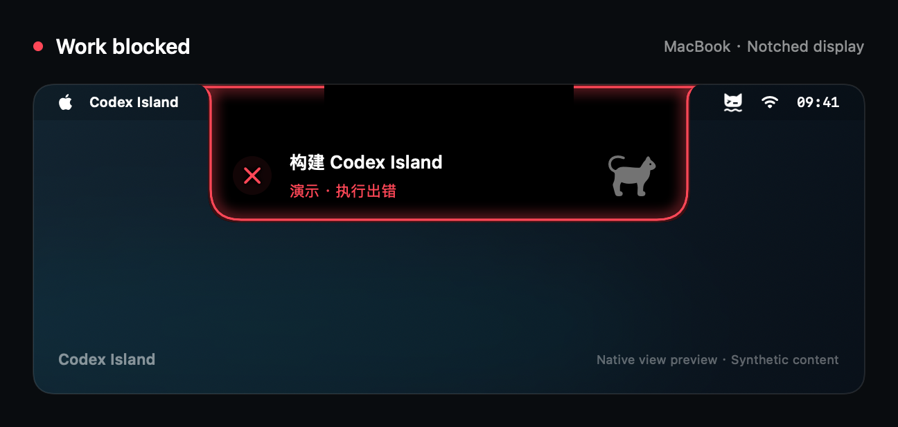
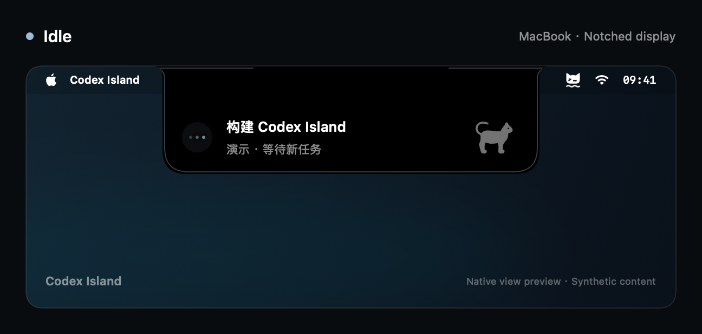
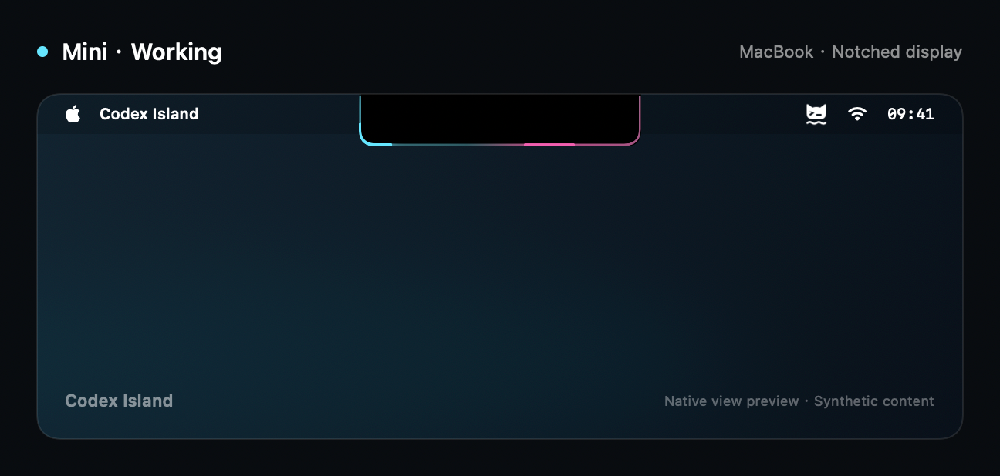
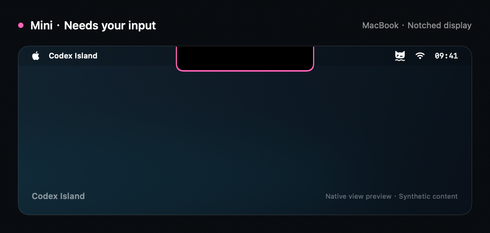
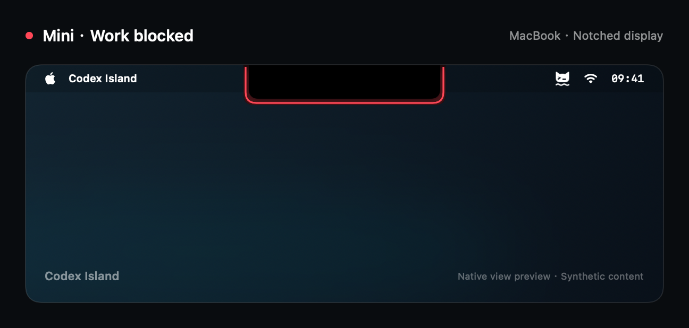
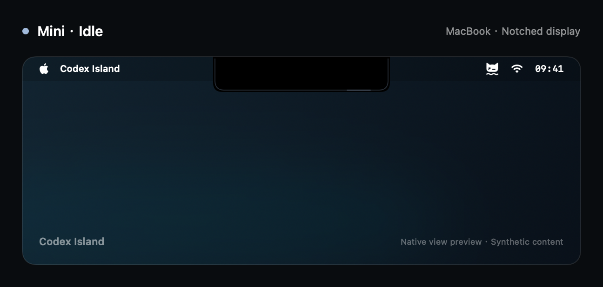

Two sources, one island
Follow Codex, Claude, or let the island rotate automatically — keeping input and error states in view.
✦ NATIVE MACOS STATUS ISLAND
A small island at the top of your screen that follows local coding sessions — activity, recognized input waits, errors, and a little company.
MACOS 14+ · SWIFT 6 · READ-ONLY · NO TELEMETRY

✦ FEATURES
The island sits where your eyes already are. Everything else stays out of the way.
Follow Codex, Claude, or let the island rotate automatically — keeping input and error states in view.
Recognized unanswered questions pulse; errors get a distinct visual state. A completed turn never pretends to be unread.
Notch-aware placement, full island or compact Mini mode, menu-bar control, Reduce Motion support.
Session titles, activity lines, and a small aquatic cat drawn from local Codex assets. Make the island yours with colors and height.
Title privacy covers the island, hover text and VoiceOver. Diagnostics are aggregated and never contain chat content.
Read-only access to local state. No telemetry, no network service, and it never sends chat or approves requests.
✦ FOUR STATES
Native renders on a notched display with synthetic content — the same eight images shipped in the README.







✦ YOUR SESSIONS STAY LOCAL
The app reads local session databases and events. It never modifies source data, sends chat messages, or approves requests.
No telemetry and no network service. Parsed events are processed in memory; diagnostics exclude titles and payloads.
A failed source never displays as idle. Incompatible data shows unavailable rather than pretending everything is fine.